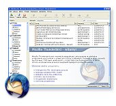

Nowości
Thunderbird 1.5.0.10 PL już jest!
W dniu dzisiejszym Mozilla Corporation udostępniła wersję 1.5.0.10 programu Mozilla Thunderbird. Nowości tej wersji to poprawki dotyczące stabilności i bezpieczeństwa. Aktualizację do tej wersji zalecamy wszystkim użytkownikom Thunderbirda 1.5.0.9 i starszych. Zapraszamy do pobierania!
M. Stępień, 2 marca 2007, 18:15
Thunderbird 1.5.0.9 PL już jest!
Mozilla Corporation udostępniła wersję 1.5.0.9 programu Mozilla Thunderbird. Nowości tej wersji to poprawki dotyczące stabilności i bezpieczeństwa. Aktualizację do tej wersji zalecamy wszystkim użytkownikom Thunderbirda 1.5.0.8 i starszych. Zapraszamy do pobierania!
M. Stępień, 27 grudnia 2006, 12:10
Mozilla Thunderbird – poczta na Twój sposób!
Thunderbird to darmowy klient poczty i grup dyskusyjnych, stanowiący wolne oprogramowanie, dostępny dla systemów Windows, GNU/Linux i Mac OS X (a także innych). Jest mały i szybki, a jednocześnie oferuje szerokie możliwości:
- filtr niechcianej poczty
- możliwość zmiany schematu (skórki)
- wyświetlanie ikonek emocji (emotikon) w czytanych wiadomościach
- obsługa kanałow RSS i Atom
- grupowanie wiadomości
- rozbudowane możliwości wyszukiwania
- wbudowane sprawdzanie pisowni
- dostosowywalne paski narzędzi
- łatwe zwiększanie możliwości programu przy pomocy rozszerzeń
- większe bezpieczeństwo
- ...i wiele innych!